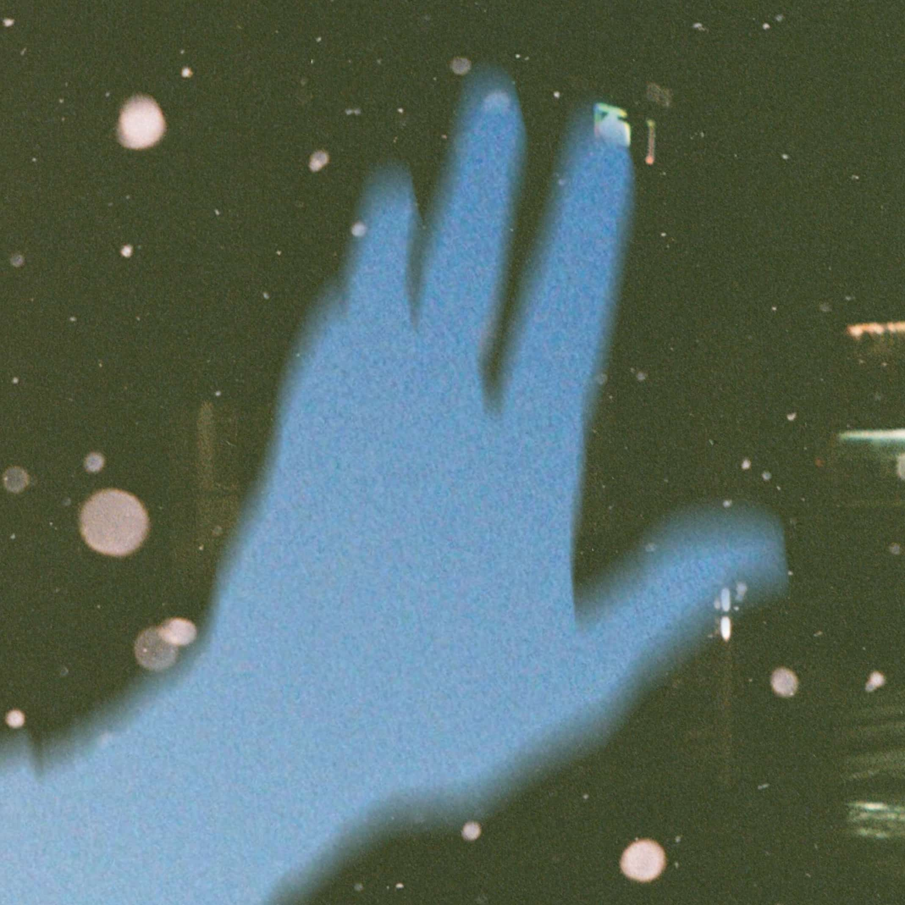

sundowner
// updated: february 25, 2025

credits
~~~~~~~~~~~~~~~~~~~~~~~~~~~~~~~~~~~~~~~~
there it is again
something incomplete is begging
for an end
every evening it crawls
across the floor
and writhes on the ground
it twists its way up to my neck
and spreads its breath
i can be your sundowner
just happy to have your shadow
i can be gone by the morning
don't need you all to be borrowed